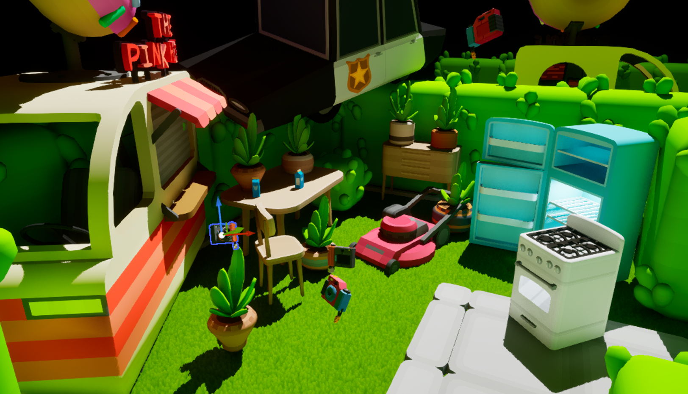
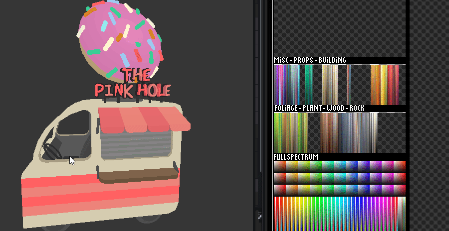
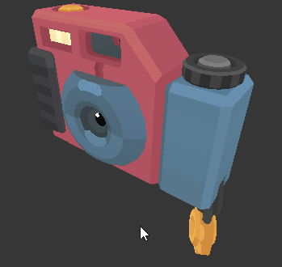

Liminal Brutalis: PA - Update #3 - A colorful approach
February 9, 2026
This sprint I'm working on quite a "colorful" area of the game. A stark contrast to the otherwise sterile, grey (Brutalistic) world of Liminal Brutalis. But don't be fooled, this place is not for leisure.
Here is a few of the funky assets!
Fun fact! Every single asset uses a single 124x124 index-texture. This of course means that I have to "texture" the assets with color-assigned-UV-islands; which increases the poly-count slightly, but what we lose in pristine mesh optimization, we gain in draw-calls and texture memory.
They're are also a ton of fun to make and — In my opinion — gain a lot of personality simply as a consequence of this workflow.
Thanks for reading and checking out our game! If you have any questions reach out at TwoGuysOnABenchboat@protonmail.com or at our socials listed below *(The Discord server is still for closed invites only atm. I Don't have the capacity to deal with a flood of people yet (Wishful thinking))*.
Cheers, Casper (Art-Man)
PS-Disclaimer: Bench Boat Games does NOT use any form of generative AI in the production of our games OR these blogposts. Enjoy the wonders and flaws of real human creativity.